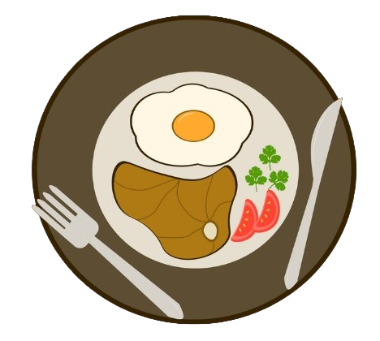

<ion-content [fullscreen]="true">
  <section class="full-screen">
    <div class="icon-frame shake-lr">
      
    </div>

    <div class="names-frame">
      <header class="name" [ngClass]="this.headerClass">
        <h1>Wilson Huallpa</h1>
      </header>

      <div class="name" [ngClass]="this.centerClass">
        <h1>Thiago Porfirio</h1>
      </div>
    
      <footer class="name" [ngClass]="this.footerClass">
        <h1>Mauro Racioppi</h1>
      </footer>
    </div>
  </section>
</ion-content>
